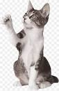

Gatos y Perros
Los gatos se comunican marcando árboles,postes o muebles con sus zarpas
o con su orín, Dejar su rastro es el modo que tienen de informar
a otros del alcance de su territorio. Su repertorio vocal va desde el ronroneo
hasta el chillido. Para entender su lenguaje, tienes que tener en cuenta todo el
cuerpo a la hora de leer las señales que manda con la cola, según explica Carlo Siracusa,
de la Facultad de Medicina Veterinaria en la Universidad de Pensilvania. Un gato que se echa una siesta y da
golpecitos con su cola, por ejemplo, está «relajado en general pero presta atención a algo que ocurre a su alrededor, un sonido o un movimiento», así que está tranquilo pero apenas adormecido, según explica en este artículo.
